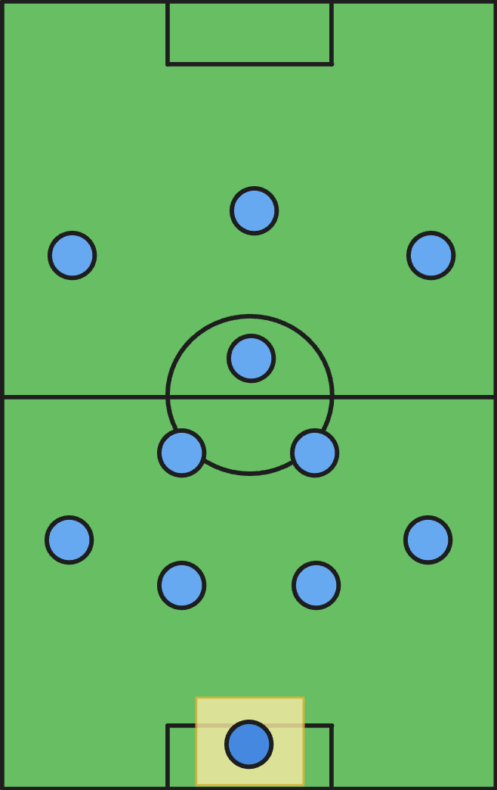
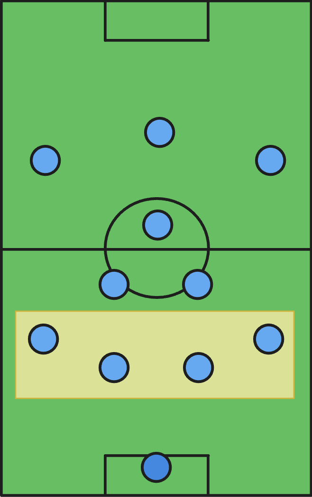
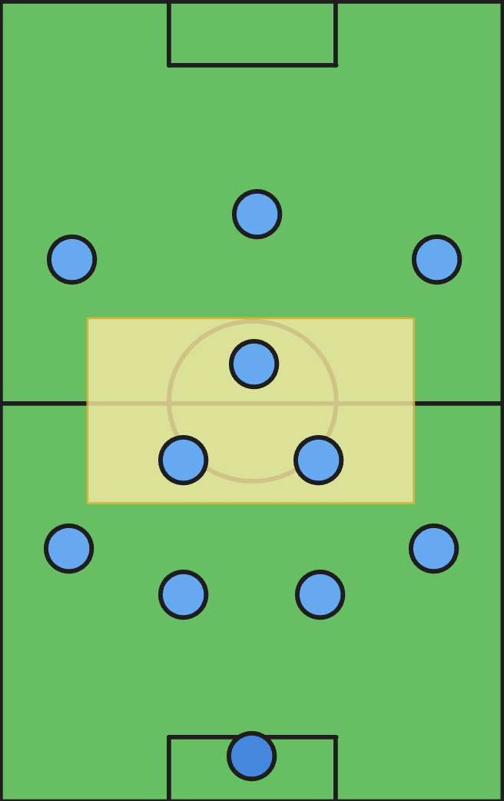
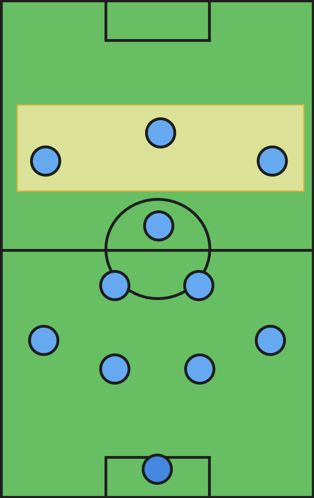

How to Play Soccer
The official game is played on a soccer field that is about
100-120 yards long and around 70 yards wide. Players cannot touch
the ball with their hands (with the exception of the goalkeeper
position) and must put the ball into the opposing team's net.
The game is split into two 45 minute halves, and whoever scores
the most goals by the end of the 90 minutes wins the game.
That's the general structure of the game. There are many more
rules, but these are the most important ones to know to follow the
game.

Positions
Like most team sports, there are positions on the field to organize players. There are 11 players on a team: 1 goalkeeper, 10 field players. Two teams of 11 players play each other.

Goalkeeper
The goalkeeper is the only player allowed to touch the ball with their hands. They are the last line of defense and are responsible for keeping the ball out of the net. Goalkeepers can only touch the ball with their hands within the penalty box.

Defenders
Defenders are the players who defend the goal. They are typically positioned lower than the other players to provide cover from opposition attacks. Defenders are usually some of the taller and physical players.

Midfielders
Midfielders are the players who do a little bit of everything. They defend when needed, but they also help out with attacks. Midfielders control the midfield, and connect the defense and attack by passing the ball. Midfielders are typically the more technical and intelligent players.

Forwards
Forwards are the players whose main job is to score goals. They are the players positioned closest to the opposition goal. Forwards are typically some of the fastest and most creative players on the team in order to create chances and score goals.
Formations
Formations are the way the players are positioned on the field.
There are many different formations, each with their own strengths
and weaknesses. Choosing a formation depends on the tactics the
team want to use.
This formation is a 4-3-3, where there are 4 defenders, 3
midfielders, and 3 forwards (we typically leave the keeper out of
the formation). The 4-3-3 is one of the most popular formations in
today's modern game.